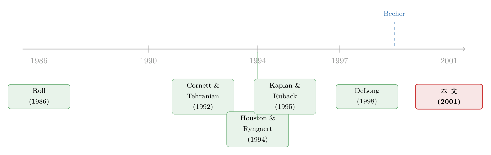

并购到底创没创造价值？——把老板心里那本账翻给你看
本文读的是 Houston, James & Ryngaert (2001, JFE)：传统研究一直找不到银行并购创造价值的证据，本文换了个思路——直接拿到 41 笔交易里管理层自己估的「成本节约」和「收入提升」，把它折现成现值，再去和股价的反应对账。结论是：1990 年代的大型银行并购确实带来了正的联合价值重估，而这份重估几乎全部来自成本节约，收入提升不仅不重要，它的估值甚至和股价反应负相关。
1 一个让人不安的悖论
先抛一个让金融学界尴尬了很多年的问题：银行并购到底创不创造价值？
按理说应该创造。1980、90 年代美国银行业的并购浪潮一波接一波，地理和产品市场的准入限制被一道道拆掉，大家普遍相信这些限制本来就在拖累银行的经营效率。门一开，重叠的网点能关、冗余的总部能撤、后台的支票清算能合并——成本应该往下走，效率应该往上提。
可数据偏偏不配合。
传统研究有两条路。一条看会计业绩：并购后银行的 ROA、ROE、或者「效率比率」（efficiency ratio，即非利息支出 / (净利息收入 + 非利息收入)）有没有跑赢同业。结论是混乱的——Cornett 和 Tehranian (1992)、Spindt 和 Tarhan (1992) 说有改善，Berger 和 Humphrey (1992)、Piloff (1996)、Berger (1997) 说没有。另一条看股价反应：并购公告前后，收购方和目标方的联合市值有没有上升。这条路的结论更让人泄气——目标公司在公告前后五天里平均涨 15%，收购方却跌大约 2%，由于目标比收购方小，两者一加一减，联合价值几乎纹丝不动。看上去，这根本不是创造价值，而是财富的再分配：钱从收购方股东的口袋，搬到了目标方股东的口袋。
于是一种解释自然冒了出来：这一整波银行并购，要么是管理层的傲慢（hubris，见 Roll, 1986），要么是一个巨大的公司治理失灵——经理们在搭建自己的帝国（Gorton & Rosen, 1995）。Ryan (1999) 干脆说，大多数银行并购根本不符合股东利益。
但本文的三位作者不甘心就此下结论。他们的怀疑是：也许效率提升是真的，只是大样本研究的工具太钝，没把它量出来。
2 为什么旧工具会失灵
要替「并购无用论」翻案，得先讲清楚旧方法为什么测不准。这一节是全文的地基，作者花了大力气。
会计法的毛病，首先是时滞。并购完成到运营改善之间的间隔又长又不稳定，而重组成本（遣散费、租约买断、软件减记）反而会先把短期业绩压下去。更麻烦的是选择偏误：为了剔除「多次并购互相干扰」，像 Piloff (1996) 那样的研究只能挑那些很少并购的银行来分析——可恰恰是那些失败的收购方才会从此金盆洗手，而成功的收购方会去找下一笔更大的交易，于是样本被系统性地塞满了「做砸了的并购」。此外，正如 Kwan 和 Wilcox (1999) 指出的，采用购买法（purchase accounting）的并购会把被收购方资产的成本基础重估到市价，折旧等会计费用会凭空上升——明明创造了真实效率，账面却显得更糟。
股价法的毛病，核心是一个词：预期（anticipation）。在一场并购浪潮的中段，收购本身是被市场广泛预料到的，正面效应早就被提前定价（capitalized）了，公告日当天根本看不到。这个问题对「最可能被收购的目标」尤其严重——Lehman、Salomon 这些投行的研报里常年挂着「下一个可能被收购」的名单，《巴伦周刊》点名的五家银行里有四家第二年就被买走了。预期一旦被提前消化，公告日的联合超额收益就会被「稀释」（attenuation bias）成一个不显著的小数。
还有两个更微妙的扰动。其一，银行并购大多用发股来融资，而增发本身被市场解读为「股票被高估」的信号——所以收购方的负收益里，混着一部分与并购价值无关的负面信号（Houston & Ryngaert, 1997 发现现金融资的并购里收购方收益显著更高，正印证了这一点）。其二，收购方公告日下跌，有时是因为市场失望地意识到「它自己以后更不容易被收购了」——PNC 收购 Meridian、First Chicago 并 NBD 都被分析师如此批评过。
还有一层更根本的：就算公告收益真的为零，也不代表没有效率提升。正如 Calomiris 和 Karceski (1999) 所言，并购带来的效率红利可能流向了银行的客户。联合价值只涨一点点，也许只是说银行只截留了其中很小的一块。
把这些毛病摞在一起，你会发现：联合股价反应不显著，根本不能证明并购没创造价值。这正是作者要钻进去的缝隙。
3 真正关键的一步：去问管理层
绕了一大圈，本文最关键、也最与众不同的一步终于登场——直接拿到管理层自己对并购收益的预测，把它量化成现值，再和股价反应对账。
这是「临床式研究」（clinical research）的思路。对 41 笔并购，作者从新闻稿、并购投票的委托书（proxy statement）、8K 文件和分析师研报里，挖出了管理层对未来两到四年成本节约和收入提升的具体预测。举个例子：1992 年初 Comerica 收购 Manufacturers National 的委托书里写得清清楚楚——预计税前成本节约第一年 $45 百万、第二年 $119 百万、第三年 $145 百万，同时为重组计提一笔 $110 百万的税前费用（税后约 $76 百万）。
拿到这些预测后，作者借鉴 Kaplan 和 Ruback (1995) 与 Gilson 等 (2000) 的做法，把预测的税后增量现金流折现成现值。几个关键处理：
- 对只给了「两年内节约 X」这种粗略数字的（比如 MNC Financial 收购 Equitable Bancorporation 说两年省
$83百万），就假设节约在过程中均匀分布。 - 预测期短于四年的，假设此后成本节约或收入提升以预期通胀率（来自费城联储 Blue Chip 十年期通胀预测）增长。
- 税后数字用「联邦企业税率再加 3 个百分点」来估（因为银行还要交州税）。
这套方法的好处在于：它不依赖事后的会计数据，绕开了时滞和会计规则的扭曲；它也不只看公告日那一瞬间的股价，而是先独立地算出「如果管理层说的是真的，这笔并购该值多少钱」，再回头看市场信不信。
4 主要结果：钱是从成本里省出来的，不是从收入里挣出来的
结果一层层揭开，每一层都在收紧同一个核心。
第一层，时代变了。与 Becher (1999) 一致，作者发现 1990 年代相比 1980 年代，收购方和目标方的平均异常收益都更高了。伴随而来的，是 1990 年代「在地并购」（in-market merger，即网点重叠度高的并购）频率上升，以及——很有意思——管理层明确给出成本/收入预测的交易数量也显著增加了。对全样本 64 笔并购，公告时联合市值平均略有上升。
第二层，也是全文的灵魂——收益从哪儿来。聚焦在有管理层预测的 41 笔并购上，作者发现：管理层期望的并购收益，绝大部分来自成本节约，收入提升微不足道。他们对收入提升的估值，平均只占管理层预测总收益的 7%，中位数干脆是零。如果采用最乐观的假设（增量收益永续、并以通胀率增长），平均一笔样本并购应该让收购方和目标方的联合价值上升 13%。
第三层，市场信不信？这是把「老板心里的账」和「市场的账」对账的一步。作者发现，管理层预测的并购收益能解释收购方与目标方联合股票收益横截面变异的约 60%。换句话说，市场的反应和管理层的预测高度相关——这本身就说明管理层的预测不是空话。
而真正的反转在这里：当作者把「成本节约的估值」和「收入提升的估值」分开放进回归时，前者与联合股票收益正相关，后者却与同样的收益负相关。
这个负号才是全文最辛辣的地方。它意味着：市场不仅不为「收入提升」的承诺买单，反而把它当成一个坏信号——也许是怀疑管理层在画饼，也许是担心强行交叉销售、抬高费率会赶走客户。成本节约才是有资本市场可信度（capital market credibility）的那一种承诺。
5 三道旁证：分析师、并购后业绩、可信度
光有股价还不够。作者又找了三道旁证来检验管理层预测的可信度，而它们都指向同一个方向。
其一，分析师。对 41 笔并购的研报分析显示，分析师基本「买账」成本节约的预测；即便有质疑，他们也和认为「估得太保守」一样常地认为「估得太激进」。但对收入提升，分析师明显持怀疑态度——有些分析师甚至指出，管理层不愿提及的「成本削减会带来收入流失」才是被刻意淡化的负面。
其二，并购后业绩。在大多数交易里，管理层事后声称达成了成本削减目标；作者也发现并购后银行的运营业绩改善，与管理层当初的成本节约估计正相关。
其三，作者也诚实地承认了自己量不准的地方：在最乐观的估值下，股价的变化看起来还是太小了，不足以匹配管理层预测所隐含的价值重估。但考虑到增量收益估值本身的误差、并购的提前预期、以及公告里混杂的与并购无关的信息，很难判断到底是市场在低估管理层的承诺，还是管理层本来就过于乐观。这种克制，恰恰是临床式研究该有的态度。
6 那个朴素却好用的重叠度量
值得单独说一句作者衡量「网点重叠」的办法，因为后续不少银行并购研究都在用它。重叠度量沿用 Houston 和 Ryngaert (1994) 的构造：先认出目标和收购方的每一家子行，再用 McNally and Thomson 银行名录数出每家银行在每座城市的网点数，然后
$$\text{Overlap}=\frac{\sum_{i=1}^{n}\min(T_i,B_i)}{\sum_{i=1}^{n}(T_i+B_i)}$$
其中 \(n\) 是两家银行中至少有一家设有网点的城市总数，\(T_i\)、\(B_i\) 分别是目标方和收购方在城市 \(i\) 的网点数。当两家完全重叠时，分子的 \(\min(T_i,B_i)\) 取到一半左右，这个指标最大值为 0.5；完全不重叠则为 0。它可以粗略理解为「并购后可以关掉的网点占比」。作者还据此把重叠网点少于目标方总网点 4% 的交易归为「市场扩张型并购」（market-expansion merger）——这个 0.04 的切点，恰好对应 SNL Securities 的分类习惯。
7 文献脉络
把这篇论文放回它的坐标系里，故事会更清楚。
最早的两条路前面已经讲过：会计法（Cornett & Tehranian, 1992 一派 vs. Berger & Humphrey, 1992 一派）各执一词；事件研究法（James & Weir, 1987；Houston & Ryngaert, 1994；DeLong, 1998）则普遍只看到财富再分配。理论上，Roll (1986) 的傲慢假说和 Gorton & Rosen (1995) 的帝国建造说，为「并购毁灭价值」提供了行为与代理层面的解释。
转折出现在世纪之交：Becher (1999) 发现并购收益随时间在上升，本文则进一步把「为什么上升」归因到成本节约与在地并购的增加。而方法论上的源头，是 Kaplan 和 Ruback (1995) 那套「把管理层的现金流预测折现、再与市场价值对账」的估值检验，以及 Gilson 等 (2000) 在破产企业估值上的延续。本文把这套工具第一次系统地搬进了银行并购，于是有了「直接审问管理层」的这条新路。

顺带一提，银行并购这条线后来还分出了好几支：有人去债券市场里找答案（关于「大到不能倒」如何让债主受益，可参见《刚跨过「大到不能倒」那道线，债主就笑了》）；也有人盯着老板的工资条，发现并购毁了股东的钱却肥了管理层（见《并购毁了股东的钱，却肥了老板的薪》）。而「并购收益究竟从谁兜里来」这个更一般的问题，在横向并购里同样被反复追问（见《并购的钱，到底是从谁兜里掏出来的？》）。
8 评论与延伸（Q&A + 研究方向）
(a) 几个可能的疑问
Q：管理层的预测难道不会自利地往高了报吗？拿它当「真相」来对账靠谱吗？
作者很清楚这一点，所以并不直接采信，而是用三道独立证据交叉验证：股价反应（管理层预测解释了约 60% 的联合收益变异）、分析师评价（对成本节约普遍买账）、以及并购后真实业绩（与成本节约估计正相关）。三者同向，才让「成本节约可信、收入提升不可信」的结论站得住。况且，若预测纯属吹牛，它就不该和股价系统性相关。
Q：联合收益不显著，凭什么说成是「工具太钝」而不是「真没价值」？
这正是第 2 节的核心论证。预期偏误（并购浪潮中段收益被提前定价）、发股融资的负面信号、以及效率红利外流给客户，三者都会把真实收益「稀释」成不显著的小数。作者的回应不是辩称收益很大，而是换一把更灵敏的尺子——管理层预测的现值——绕开这些钝化效应。
Q：为什么收入提升的估值会和股价反应「负相关」？这不反直觉吗？
反直觉，但有故事。市场可能把「靠收入提升创造价值」的说法当成画饼或过度乐观的信号；分析师研报里也提到，强行交叉销售、抬高费率往往伴随客户流失，而管理层倾向于隐瞒这部分负面。于是一份强调收入提升的并购，反而让市场更警惕。
Q：这套结论只适用于「大型」银行并购吧？小并购呢？
是的，这是本文的边界。作者刻意只选 64 笔大型并购（交易额超 1985 年不变价
$400百万、目标资产≥收购方10%），理由是大交易更容易观测业绩影响、也更可能有详尽的披露和分析师关注。小型并购的收益来源是否同构，本文不能回答。
Q：那把「重叠度量」当成「能关掉的网点占比」，会不会太粗糙？
作者自己也称它是「粗略度量」（crude measure）。它只数网点的地理重叠，既没考虑网点规模、客户结构，也没区分关哪一家更优。但它的好处是客观、可复制，且与 SNL 的市场内/外分类高度吻合，作为横截面解释变量够用。
Q：成本节约里，会不会混进了「不并购也能省下的钱」？
会，分析师研报里就抓到过这种情况。但作者提醒：不把这部分剔除，未必是傲慢的证据——也可能只是管理层在淡化并购的负面。这一处的模糊性，作者没有强行下结论，留作了开放问题。
(b) 几个可能的研究问题与提案
1. 把同一套「问管理层」的方法搬到债券市场。 【经济故事】本文只看股票。但成本节约提升的是现金流稳定性，对债权人尤其是利好；而「大到不能倒」会让并购后的违约风险下降。管理层的成本节约预测，是否也能解释收购方与目标方债券利差的变化？ 【可行性】中。需要 TRACE 或更早的债券交易数据匹配本文这类管理层预测样本，识别上可借鉴成本/收入分项回归。难点在于早期（1985–1996）债券数据稀薄，可能要把样本前移到 TRACE 覆盖之后的并购。
2. 收入提升承诺的「负信号」，能否在公司债定价里复现？ 【经济故事】既然股市把收入提升当坏信号，债市会不会反应更强（因为收入提升往往意味着更激进、更不确定的整合）？这能把「市场不信收入故事」从股权延伸到信用市场。 【可行性】中。同样依赖债券利差数据 + 管理层分项预测的人工搜集，识别策略是分项现值对利差变化的横截面回归，并控制融资方式（现金 vs. 发股）。
3. 外资持有比例是否改变市场对并购收益的「信任度」？ 【经济故事】本文发现市场对管理层成本节约预测有可信度。但不同股东结构下，监督与信息加工能力不同——外资或机构持股高的银行，其管理层预测是否被市场赋予更高的解释力（更高的 R²）？ 【可行性】中。需把本文样本与 13F/外资持股数据合并，做分组回归比较「预测—收益」斜率。doable，但样本量（41 笔）偏小，统计功效有限。
4. 成本节约的「外流」去了哪里——客户存款利率与贷款定价。 【经济故事】Calomiris & Karceski (1999) 猜测效率红利流向客户。可以直接检验：在地并购（高重叠）之后，当地存款利率和贷款利率有没有变化？这是把「联合收益为何偏小」的猜想做成实证。 【可行性】高。RateWatch 等存款利率数据 + 网点级地理信息（本文的重叠度量正好可用），用并购作为冲击做事件研究或 DiD，是相对干净、可执行的设计。
9 参考文献
我的判断：这篇论文的真正贡献，不在于「证明了银行并购创造价值」——它对量级始终保持克制——而在于换了一种审讯证据的方式。当大样本的股价回归被预期、融资信号、红利外流层层钝化、什么都测不出来时，作者退回到「直接问管理层、再用三道独立证据交叉对质」的临床路径，把一个含糊的总量问题，拆成了「成本 vs. 收入」这个可以被定价的、有方向的命题。那个收入提升的负号，是全文最有价值的发现。
对识别，我有两点担心。其一是样本选择：41 笔有管理层预测的交易，恰恰是管理层有信心、愿意披露的那些，这本身可能就和「会成功的并购」相关，使「预测—业绩正相关」被高估。其二是 41 这个样本量太小，分项回归的稳健性值得怀疑，作者也确实没能说清股价反应与预测现值在量级上是否匹配。
我接下来最想看到的，是把这套方法接到债券市场和存款利率上——既能检验红利是否真的外流给了客户，也能看「收入提升=坏信号」这件事在信用市场里成不成立。
参考文献
- Becher, D.A. (1999). The valuation effects of bank mergers. Penn State Working Paper.
- Berger, A.N. (1997). The efficiency effects of bank mergers and acquisitions: a preliminary look at the 1990s data. In: Amihud, Y., Miller, G. (Eds.), Mergers of Financial Institutions. Business One-Irwin, Homewood, IL.
- Berger, A.N., Humphrey, D.B. (1992). Megamergers in banking and the use of cost efficiency as an antitrust defense. Antitrust Bulletin 37, 541–600.
- Berger, A.N., Demsetz, R.S., Strahan, P.E. (1999). The consolidation of the financial services industry: causes, consequences, and implications for the future. Journal of Banking and Finance 23, 135–194.
- Calomiris, C., Karceski, J. (1999). Is the bank merger wave of the 1990s efficient? Lessons from nine case studies. In: Kaplan, S.N. (Ed.), Mergers and Productivity. University of Chicago Press, Chicago.
- Cornett, M.M., Tehranian, H. (1992). Changes in corporate performance associated with bank acquisitions. Journal of Financial Economics 31, 211–234.
- DeLong, G.L. (1998). Domestic and international bank mergers: the gains from focusing versus diversifying. Working Paper, New York University.
- Gilson, S., Hotchkiss, E.S., Ruback, R.S. (2000). Valuation of bankrupt firms. Review of Financial Studies 13, 41–74.
- Gorton, G., Rosen, R. (1995). Corporate control, portfolio choice, and the decline of banking. Journal of Finance 50(5), 1377–1420.
- Houston, J.F., Ryngaert, M.D. (1994). The overall gains from large bank mergers. Journal of Banking and Finance 18(6), 1155–1176.
- Houston, J.F., Ryngaert, M.D. (1997). Equity issuance and adverse selection: a direct test using conditional stock offers. Journal of Finance 52, 197–219.
- James, C.M., Weir, P. (1987). Returns to acquirers and competition in the acquisition market: the case of banking. Journal of Political Economy 95(2), 355–370.
- Kaplan, S., Ruback, R.S. (1995). The valuation of cash flow forecasts: an empirical analysis. Journal of Finance 50, 1059–1093.
- Kwan, S., Wilcox, J.A. (1999). Hidden cost reductions in bank mergers: accounting for more productive banks. Proceedings of the 35th Annual Conference on Bank Structure and Competition, Federal Reserve Bank of Chicago.
- Piloff, S.J. (1996). Performance changes and shareholder wealth creation associated with mergers of publicly traded banking institutions. Journal of Money, Credit and Banking 28, 294–310.
- Roll, R. (1986). The hubris hypothesis of corporate takeovers. Journal of Business 59(2), 199–216.
- Spindt, P.A., Tarhan, V. (1992). Are there synergies in bank mergers? Tulane University Working Paper.